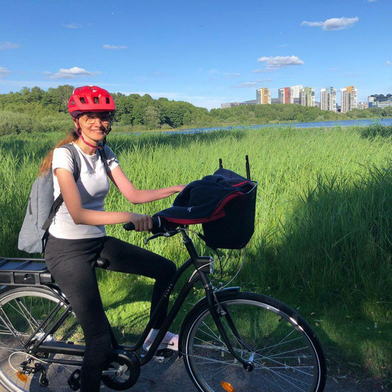

Current Position
Senior Lecturer at Stockholm University
Research Interest
I enjoy developing fresh ways to tackle complex problems.
Previous Development Experiences
Telecommunication, Ecommerce, AR/VR, Game, Web/Mobile application.
Previous Research Experiences
PhD at KTH Royal Institute of Technology, Research Assistant at Stockholm University, Research Assistant at KTH Royal Institute of Technology, Research internship at Karlstad University, Research collaboration with Zhejiang University.
Hobbies
Astronomy, Algorithms, Hiking, Biking, Puzzles, Problem solving, Games, Question Everything, Travelling.
Languages
English, Swedish, Armenian, Persian.
Let's Connect
LinkedIn
Follow Me Here
ResearchGate & ORCID
List of Research Works
Google Scholar & GitHub
List of Peer Reviews
Web of Science
List of demos and tutorials
Follow Arshel Tutorials to view game demos and tutorials.